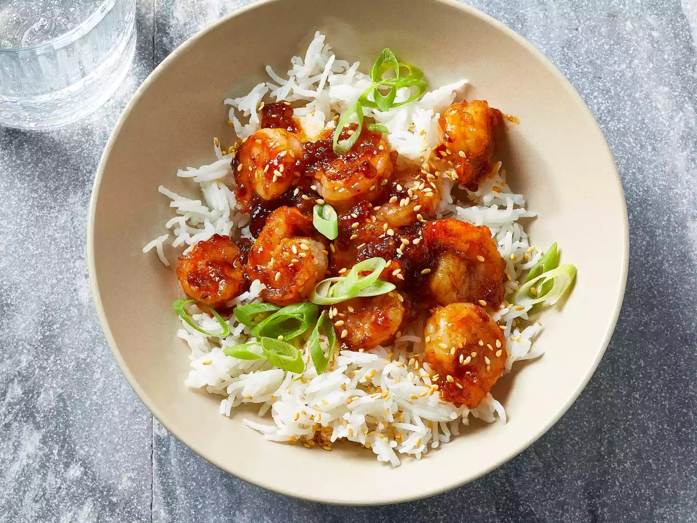

Firecracker Shrimp
To make these easy firecracker shrimp, simply toss fresh shrimp in a sweet
and spicy Asian-inspired sauce and then quickly stir fry in a wok.

Ingredients
These are the ingredients you’ll need to make this firecracker shrimp
recipe:
-
For the sauce: sweet chili sauce, lime zest, lime
juice, sriracha, and low-sodium soy sauce
-
Shrimp: You’ll need a pound of peeled and deveined
shrimp. Learn how to peel and devein shrimp here.
-
Salt: Season the shrimp with salt before you coat it
with cornstarch.
-
Cornstarch: Cornstarch helps ensure the shrimp is
crispy. Plus, according to Juliana, it helps thicken the sauce.
-
Oil: This firecracker shrimp calls for peanut oil,
which has a high smoke point.
-
Rice: Serve the firecracker shrimp over hot, cooked
white rice for a complete meal.
-
Garnishes: Garnish the firecracker shrimp with fresh
green onions and sesame seeds.
How to Make Firecracker Shrimp
You’ll find the full, step-by-step recipe below – but here’s a brief
overview of what you can expect when you make firecracker shrimp at home:
- Make the sauce.
- Dry the shrimp, season, and coat with cornstarch.
- Cook the shrimp in oil until opaque, then remove from the wok.
- Boil the sauce until thick.
- Return the shrimp to the wok and toss in the sauce.
- Serve the firecracker shrimp over rice and garnish.
Home